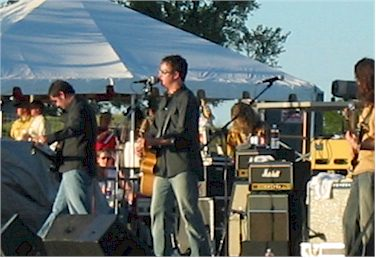
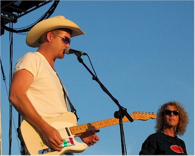
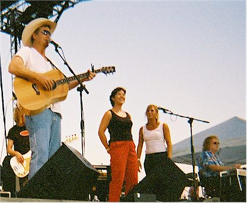
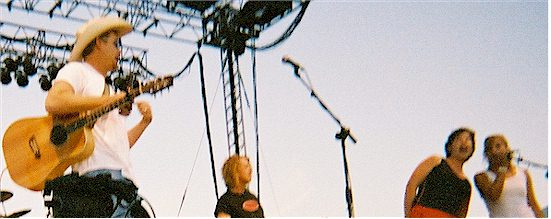
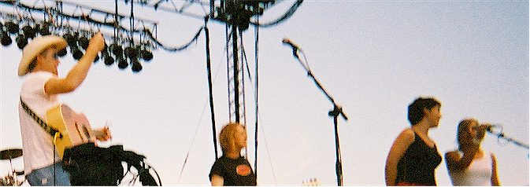
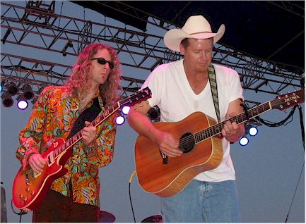
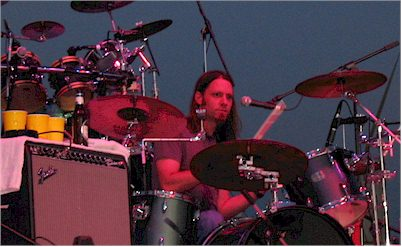
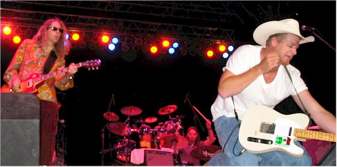
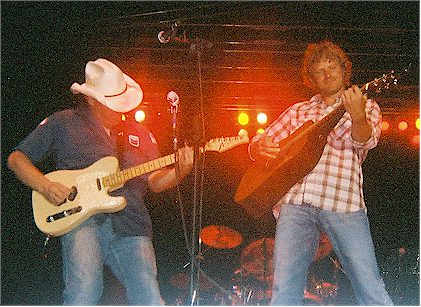
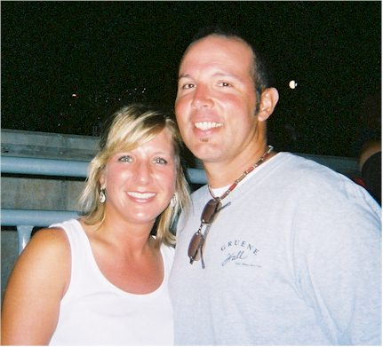

Saturday, August 28, 2004
| I attended "College Days" at
Tumbleweed's Outdoor Concert area in Stillwater in August 2004, mostly
because it was a chance to see Charlie Robison. He was always a
favorite of ours in Houston & Austin. I met another couple who
came all the way from St. Louis to hear Charlie play - now that's
dedication!
It turned out to be an amazing night for me. I won't spoil the
surprise here, the details are below. |
|
 |
 |
| I believe this was "No Justice." I only
caught the end of their act. |
"The Great Divide" was supposed to be next so imagine
my happy surprise when Charlie took the stage! |
|
Charlie does a song called "The Wedding Song" with
Natalie Maines from the Dixie Chicks Despite the fact that (as all my good friends are well
aware) I can't sing at all, I never would have done it if Sandy hadn't dragged me up
there. I sang terribly but It was a blast! Thanks Sandy.
|
|
  Here we are, happy to be there. |
|
| It's strange that professional singers never seem to open their mouths this big... | |
|
 |
|
|
Sandy, thankfully, did most of the singing. And then our brush with fame was over... |
|
 |
 |
| Charlie put on a great show, as always. | Charlie's drummer |
|
|
|
 |
 |
| Jammin' at the front of the stage
|
This is Dierks Bentley (on the right.) He sings,
"What Was I Thinkin'" and is quite a cutie. |
 |
|
| Here are my new friends - Sandy & Chance all the way from St. Louis. | |